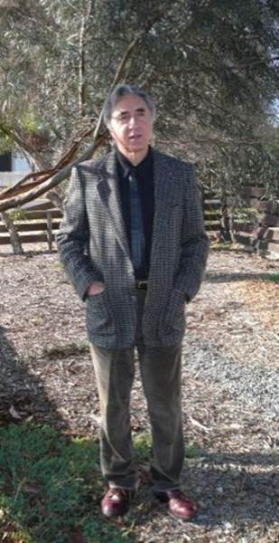
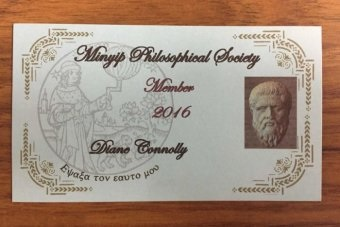
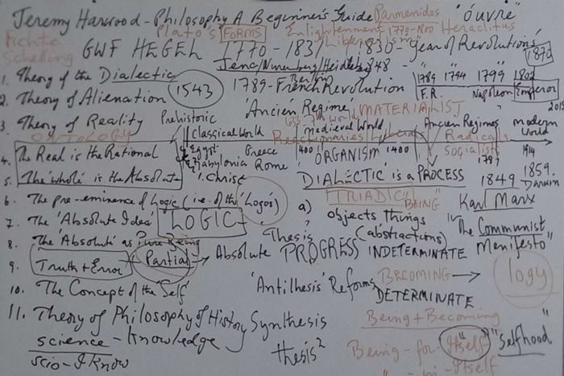
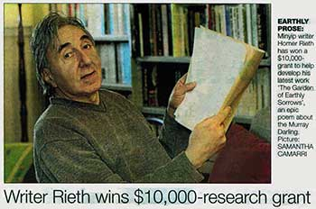
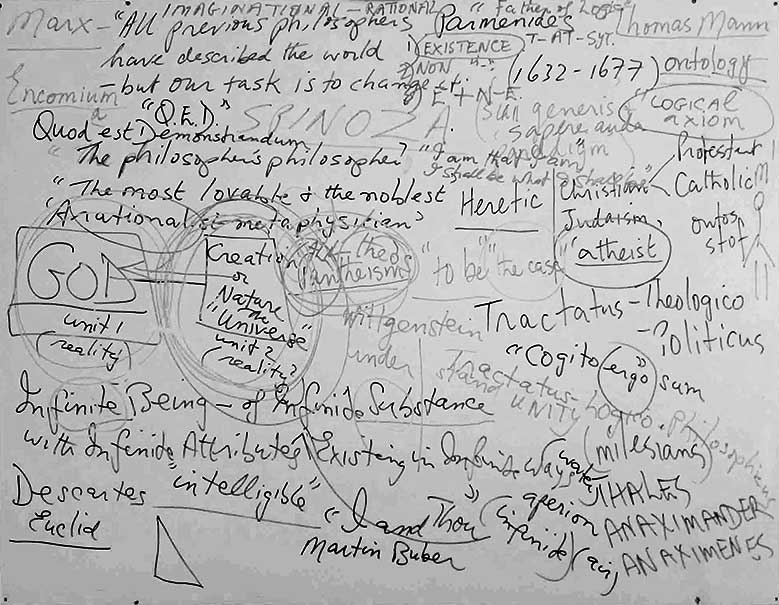

|
|


Homer Manfred Rieth was born in Stuttgart in 1947, of German and Georgian parents. He came to Australia in 1952. He was educated at Padua and Assumption Colleges and, following a short period in the Jesuit novitiate at Loyola, Watsonia, at the University of Melbourne. Since 1999 he has made his home in the Wimmera township of Minyip.
He has been a teacher of Greek and Roman literature and philosophy, English literature and medieval and modern history. He has traveled through Mediterranean lands, including a sojourn in the monasteries of the Holy Mountain of Athos in Greece and has tutored in Spain and the UK. He lectured in Classical Studies in the Greek-Australia Centre at RMIT University, and also held the Honorary Chair of the Melbourne Poets Union. He has three daughters and a son.
His awards include the Deakin Literary Society Prose Prize (1994) and the Australian Poetry Cup (1998). His collection The Dining Car Scene was published in 2001.
Wimmera is an epic poem spanning over three hundred pages. He completed a Doctorate in Creative Literature at the University of Ballarat, which incorporated an earlier version of Wimmera and an exegesis exploring the history of the epic genre and its relationship to Australian landscape poetry. He is currently researching materials for a second epic, The Garden of Earth, a sustained poetic rhapsody and tone poem, with accompanying musical score, for which he received a grant from the Literature Board of the Australia Council for 2010 and from Arts Victoria in 2012 (see below).
While working on The Garden of Earth Rieth has completed a collection of sonnets, 150 Motets, published by Black Pepper in 2013.
In 2013 Homer Rieth won the Max Harris Poetry Award from the University of South Australia for his poem ‘Ode to Evening’. The judges were Judith Beveridge and Kevin Brophy. Their comments were:
A poem that manages to be musical, receptive to the world, deeply metaphoric, and incisive about values all at once. The sustained rhythm, repetition and detailed imagery are beautifully alluring and hypnotic. The poet keeps the poem buoyant and elegant through use of long-breathed line that enacts time's cyclical movements. The poet demonstrates exquisite control of craft and subject matter.
Homer of the Wimmera
The ABC RN Earshot podcast
Presented by Miyuki Jokiranta
Monday 10 September 2018 11:05AM

View some images.
Listen to the podcast
Read Listeners' comments.
Give the ABC your thoughts.
Add your own comment.
Follow this link to the ABC website:
http://www.abc.net.au/radionational/programs/earshot/homer-of-the-wimmera/9910428
Listen to the podcast
Minyip Philosophical Society
Farmers and retirees in 'Minyip Philosophical Society' begin 'master's' degree in rural Victoria
A group of farmers, working professionals and retirees in a small Victorian grain town will this year begin their master's degrees in Western philosophy.
They will not receive a certificate, as the course is not recognised by authorities.
They will not write an essay, nor sit any exam.
In fact the only official part of the course is their lecturer, former philosophy professor Dr Homer Rieth, who has been running free classes in Minyip for five years.
"I took the view that I was going to give them the virtual equivalent of a fully-fledged university course," he said.
"Philosophy asks us, invites us, in fact compels us, to open our minds in such an unafraid fashion that we are prepared to countenance any idea."
Homer Rieth, Minyip Philosophical Society lecturer
"I said to them, at the beginning of the fourth year, 'think of yourselves as now doing your Honours year'.
"At the beginning of this year, the fifth year, I said 'you're now starting your MA."
Dr Rieth has a doctorate in literature and is known for his 'epic' — a poem extending over 360 pages — titled Wimmera.
Philosophy has been at the centre of his life since the 1960s and he spent more than a decade lecturing at RMIT University.
But 17 years ago the philosopher and author traded in a Melbourne life of academia, for a house in "the heart of the wheat belt": Minyip.
"For many years I just resigned myself to the fact that philosophy was something I would still continue to read and love in my own time," he said.
"But after some years of living in this small town, here the Wimmera, it became almost a pressing need to answer this feeling of wanting to give something back."
") Photo:
'Minyip Philosophical Society' class, led by Dr Homer Rieth
(standing)
Photo:
'Minyip Philosophical Society' class, led by Dr Homer Rieth
(standing)
'Free port and sherry' and a bit of Greek philosophy
Dr Reith put an advertisement in Minyip's Lion's Club newsletter, offering to teach a three-month course in Greek philosophy.
"I thought, I better put in an incentive at the end of the advertisement," he said.
"People, and that well may include me, continually underestimate people who live in the bush. They tend to think of them being less educated or even uneducated."
Dr Homer Rieth, Minyip Philosophical Society lecturer
"So I added the rider 'Free port and sherry served after every lecture'.
"I thought, if nothing else that will get two or three stragglers to come."
Dianne Connelly was among eight people who turned up for the first class.
"I don't think it was anything really more than a case of going to support somebody that was trying something new," Ms Connelly said.
That was five years ago.

Photo: Diane Connolly's 2016 'Minyip Philosophical Society' membership card (Danielle Grindlay)
Within months Dr Rieth's classes morphed into the 'Minyip Philosophical Society' and instead of a three-month crash course he decided to cover the entire history of western philosophy.
In 2016 there are 24 members, including a list of farmers.
"We have retired farmers [and] we have active farmers," Ms Connelly said.
"Jock certainly enjoys it and we enjoy his wife's cooking.
"John would be in his 70s, but he's still farming."
Neither Jock's nor John's wife attends the classes.
Surprised?
"I don't know why," Ms Connelly said.
'Whereof one cannot speak, thereof one must be silent' — Ludwig Wittgenstein
The murmurings of Austrian-British philosopher Ludwig Wittgenstein could well be the catchcry of Minyip Philosophical Society, which shatters stereotypes of rural communities.
"People, and that well may include me, continually underestimate people who live in the bush," Dr Rieth said.
"They tend to think of them being less educated or even uneducated.
"Classic stereotypes [include] block heads living in the back blocks and country cousins who are thick heads and don't know anything except how to grow wheat or run sheep.
"They couldn't be further from the truth."
Ms Connelly agreed.
"I've found city people to be far more closed-minded than country people," she said.
"I would say that the intelligence level of most of the people that live in Minyip is probably higher, on average, than people that live in a city or a large regional town."

Photo: Dr Homer Rieth's whiteboard of notes during a 'Minyip Philosophical Society' class
'Leisure is the mother of philosophy' — Thomas Hobbes
If there is no degree at the end of it and no pathway to a new career, why does this group exist?
The simple answer, according to Dr Reith, is to enjoy the art of philosophy.
"It is the intellectual adventure of mankind," he said.
"Philosophy asks us, invites us, in fact compels us, to open our minds in such an unafraid fashion that we are prepared to countenance any idea.
"What meaning does my life have? Of what significance are my relationships? What is my place in this universe?
"Through the study of philosophy, their whole view of the world could change."
Homer Rieth: Interview ABC Radio Darwin Sunday 17 January 2016
Sample Poem
Ode to Evening... On a Theme by Walt Whitman
for Ken Smeaton
The streets keep to themselves, calm, unperturbed, almost halcyon
you could say... they mirror the spirit of the moving-water silences
of Golden Plains, descending over Navigators in the slipstream, drifting into rain—
quiet as cloud-flecks above Brown Hill and Mount Helen, floating by (where the towers are watchers
of the clay pans)... quiet as the afternoon light turning alluvial... quiet as the cumulus
milting over Mount Emu... and suddenly it is evening—
it puts the minds of ghosts to rest—the air being cool and clear and almost
windless... you could call it a perfect evening (in its way) only now familiar things seem
stranger than strangeness itself, and that which was the wheat, has become the chaff—
and truly I would say, ‘hope springs...’ as if it were a mantra, were it not that the word ‘eternal’
(sounding more preternatural than it used to) catches on the tongue,
as unremitting as tomorrow—
and yet they are still there, Napoleons, Rokewood, the road to Cape Clear—
sequestrated in time, like these trees, serried and canopied in their orders of stillness,
in the auroras of evening above Memorial Arch—where the dead are honoured in their stoic refusals—
yet, to trees it must seem that change is all—the irremediable vanity, and since all things
are things of rise and fall, can anything ever reconcile with itself, or leave its trace
in the dust of the sempiternal?—
only trees themselves, perhaps, the grace of their introspections, as seen among
the elms and maples ofWindermere and Ascot Street—with their candelabras of perfect cut,
their leafy polyhedrons of shade—a life beyond the human world;
in the Botanic Gardens, the prime ministers seek leave to cross, on a point of order,
that last threshold of nostalgia—to become like these trees
(Ashbery’s or ours?) monumental, you might say—but as it is, they resemble
the 21stcentury on the make—and all the while on Webster Street
it is evening and it seems to me the streets are still keeping to themselves—
calm, unperturbed, almost halcyon, you could say... and now the lake water birds are coming
into their own reflection, and from narrow synclines and anticlines of bluestone
I hear young boys on their skateboards, curling the concrete,
cutting it fine, as intricate as the future—
I doubt not that Mount Disappointment still appeals, since it never fails
to disappoint—and English gardens, retreating into orders of virtue, are still orders
of obsession, for the idea of magnolias may at any moment again
take hold of the mind—perhaps it is not the words we cannot say, but the words
we cannot find, that undo us—and we shall be, like shadows
cast by shadows, what we have failed to become—and that is no small thing,
to watch the world we have known and loved, unraveling—
for now, in ‘the bunker’, day after day, I am a book that is being remaindered,
a periodicity in which the rarefaction of all elements has been arrived at, with zero resistance—
the linear accelerator moving with animal patience, rotates its tuned-cavity through routines
of high voltage waves— the light is ‘Mariana Trench’ rather than ‘meadow’ green,
unnerving lifelong symmetries—
thus you may understand how I am minded to dwell upon the moving-water silences
of Golden Plains, in the slipstream—for when evening falls, it is then you begin to see
what they mean, the words in the line, ‘Night’—as Walt hymned it—‘sleep, death and the stars.’
In ‘A Clear Midnight’, their mysteries are unending, their origins are spoken for
and were, before the world began—in a way that we may never fathom—they are calm, unperturbed,
almost halcyon, you could say.
Writer Rieth Wins $10,000 Research Grant
Carly Werner, Wimmera Mail Times, 7 September 2012
{kind=link}

Minyip writer Homer Rieth has won a $10,000 grant to help develop his latest work. The Arts Victoria Arts Development program grant will help Mr Rieth cover costs associated with travel, research and field work for his epic poem The Garden of Earth. The poem focuses on the Murray Darling and Mr Rieth estimated it would be more than 400 pages long once finished.‘I applied for the grant in February and had to wait about six months and hope I would be successful,’ he said; ‘It is a four to five-year project and I am about halfway through... I have visited mainly the Murray but I haven’t been much further than that as I haven’t had the means to do it, which is why I applied for the grant....‘Some time next year I will go up the Darling.’
Dr Rieth’s project is one of 67 across the state to share in almost $770,000 worth of grants. The grants are given for an 18-month period. Dr Rieth — who was born in Stuttgart, Germany — also wrote the epic poem Wimmera, which took four years and was released in 2009. He won the Deakin Literary Society Prose Prize in 1994 and has been the Honorary Chair of the Melbourne Poets Union.
He said his new work focused on the Murray Darling river system, landscape and the literary history of the region. ‘It also looks at the bigger questions about the future of the Murray Darling - there is a political level to the poem as well,’ he said. Dr Rieth said the poem would be made into a book and released through Black Pepper Publishing. He also has a new book coming out called 150 Motets which will be released in time for Christmas.
Homer Reith and the Minyip Philosophy Society

The Ancient Greeks were still the main topic. Slowly, slowly, Homer progressed through the philosophers, mostly in chronological order. Of course, questions could easily distract Homer from the topic of the day but Homer has the wonderful ability to return to the original topic.
In the beginning the plan was to cover the history of philosophy of the Western world in a weekly session over about a year. Two years later we are just scratching the surface of this vast subject. Homer’s knowledge of detail of the history of philosophy may take us forever to extract!
Homer has had what I would call an informed and daunting audience including Christians, both Catholic and Protestant and free thinkers. One of our members is a pastor; another, a doctor, who has also been a missionary in New Guinea; another enthusiastic man from Adelaide drives here when he can (a 900 km round trip)! Homer has withstood a barrage of probing questions. Always, it has appeared that he has satisfied the questioner without antagonising any others however sensitive the answers might have been. Homer is very diplomatic.
Last year, as you would know, Homer was ill and we really missed our Friday session whilst he recovered. Now Homer is much better and is as enthusiastic as always. He has even put on some weight! We are delighted that Homer again conducts these philosophy sessions and we hope he continues for many years to come.
Richard has made a practice of photographing the whiteboard at the end of each session. A couple of these wonderful illustrations have been attached. Although they are difficult to decipher, even if you were there during their creation, they jog memories and often more questions. At the end of the lecture the whiteboard shows Homer’s depth of knowledge and his understanding of the complexities of philosophy and philosophical thought throughout history. To a third party they may be unintelligible!
Homer has given his time for no charge to the benefit of the local community. We all appreciate this and have the greatest respect for his amazing intellect and his willingness to share the knowledge he has acquired over a lifetime.
Homer is unique!
HOMER RIETH RETIRES POET, PHILOSOPHER, LECTURER
In 1999 Homer Reith arrived in Minyip. In March 2011, in order to contribute to the range of pursuits and activities in the community, Homer advertised in the Lions Minyip Community Newsletter, a short course of twelve weeks in Classical Philosophy.
This "short course'", in fact, continued for the next eight years, during which Homer lectured every Friday at 11am in the Minyip Memorial Hall. The lectures ran from the 1st February to the 1st December each year.
The original membership of 6 grew to about 12 by the end of the first year. Over the eight years membership steadily grew. At the beginning of 2019 membership is in the order of 30 plus.
In January 2019, Homer formally retired and wished the Minyip Philosophical Society (MPS) to continue and flourish and acknowledged the unique nature of the society and the cherished friendships it fostered.
On February 1st 2019, sixteen members with three apologises met at 11am in the Minyip Memorial Hall to discuss the future direction of the MPS. After a range of options was presented, the MPS decided to continue during 2019, meeting once a month of the first Friday of the month at 11am in the Minyip Memorial Hall.
The first series of sessions will revisit the study of Early Greek philosophers based on the content of the course as originally presented by Homer in 2011. Online podcasts and programs will be utilised to nominate a topic for discussion and present materials for members to discuss, debate and investigate.
An invitation is cordially extended to all interested persons to join the 2019 program.
The MPS is unique and remarkable. The society brings together a broad range of individuals of diversity and experience. Each member brings to the meetings their childhood, family life, working life, personal beliefs, community values and the richness of their lifetime endeavours. As such their participation is their legacy to Homer and Minyip.
Homer's talented skill in leading the MPS, and his scholarly presentation of the course content were masterly. So evident was this that members travelled substantial distances from as far away as Benalla, Nhill, St Arnaud, Stuart Mill, Geelong, and the wider Wimmera District in order to attend. From time to time, members would bring relatives and friends to Philosophy including visitors from Taiwan, Phil and Colleen from Brisbane and Peter from Adelaide who would attend for weeks at a time during business trips to NSW and Victoria.
Members and friends of the MPS extend to Homer their utmost gratitude, respect and admiration for his intellectual leadership. His lectures were far reaching and rich in content from the earliest records of philosophical thought through the classical period the medieval world and into the modern era of the Twentieth Century and Postmodernist trends in the Twenty First Century.
Homer blended his vast knowledge of Philosophy, History and Geography, Religion, Literature, Economics and the Sciences together with personal insights in order to pass on skills and knowledge used in the study and practice of philosophy. Homer insisted that people not only "do" philosophy but "be" philosophers.
Homer guided the queries, questions and opinions expressed during the sessions by encouraging the disciplines of philosophical logical and linguistic analysis.
Humour and good will were features of Homers lectures and the exploration of ideas included many intriguing deviations off the beaten track, meanderings and digressions from the subject at hand. These were known to the group as "warrens".
Homer's legacy to us is rich knowledge, expanded insight and improved skills in process of thinking through concepts, all of which were key parts of the study of philosophy. Homer also gave us a great reading list long enough to last a lifetime.
The MPS will continue the quest for understanding and to seek for answers to the most enigmatic questions about what Douglas Adams in "The Hitchhikers Guide to the Galaxy" called "the meaning of life, the universe and everything!" If the MPS finds the answers to these questions it will let Minyip know first and then the world.
Homer will continue to guide and advise the MPS from time to time and be part of the society as a treasured friend and resident of Minyip.
From everyone..
Thank you Homer.
Besides leading Philosophy Homer as writer/poet, in tribute to his town and countryside has published the epic poem "Wimmera" and a second epic poem "The Garden of Earth" which addresses the past and future of Australian rivers.
We would like to gratefully acknowledge Diane Connolly and extend to her our appreciation for all her efforts in coordinating the running of the MPS from its inception to the present.
Thank you to the members for their companionship and the generosity of sharing cakes, savouries, and fresh produce from their gardens throughout the years.
Christine Douglas
by Christine Douglas.
The following entries are summaries based on verbal conversations by phone calls. They are presented in the vernacular, every-day expression, to catch the personal voices of the speakers and convey, through their words, their high regard and respect for Homer.
Helen (2016-) Sheep farmer, Stuart Mill
Homer opens up broader knowledge and allows you to think in ways you have not thought of before and from different angles you have not thought of either. He had a great ability to discuss ideas and keep our interest. His scholarship and friendship were gifts to the group.
Jock (2015-) Farmer, Murtoa North
Homer had the ability to communicate and accommodate different views and different perspectives. He was a font of knowledge over the broad range of disciplines including science and economics. Homer is inspiring, diplomatic, friendly, a thorough gentleman.
Glenn (2016-) Retired compositor, mechanical fitter, earth moving equipment, St Arnaud
I respect Homer hugely and he guided us in his own Inimitable way, even prepared to dig warrens to further explore ideas. The time and effort he put in is very much admired. Homer enabled the grey matter to keep ticking over. It was important to consider what other people think and be exposed to other philosophies. If other ideas or propositions can tear down your view, then your views shouldn't stand - the search for truth is paramount.
Jane (2015-) Nurse Teacher, Ballarat Uni, Murtoa
I found Hegel hard but Homer explained Hegel so well I clearly understood his philosophy. Homer's broad knowledge of Christianity and Philosophy made the history of resulting debates and conflicts very interesting. What ever question we asked, Homer always said, 'that is a good question!', which encouraged our input because Homer never implied that we asked any dumb question.
Anne (2010-) Computer operator, accountant, teacher of adults, St Kilda, now Minyip
Compared to the philosophy I attended in London where the session was more student-led group discussion, Homer was a skilled lecturer. We learnt a lot about diverse philosophies throughout history. Because of philosophy I got to meet the locals I had not met before and made friendships.
Richard (2010-) Crop farmer, Minyip
Homer created the connection, interaction and balance between philosophy, science, history and religion. He had the ability to weave a story containing all systems of thought. Because of my preference for reading non-fiction, Homer inspired me to continue to read even more widely.
Chris H (2015-) Administration. Formerly Benalla, now Minyip
Philosophy gave me the opportunity to meet other people who were interested in ideas and how philosophy reflects on the ways of living and the ways of the world. I was guided by an experienced teacher of Philosophy. Homer's lectures stimulated further reading. He also made reading recommendations. Shared humour was a feature of our study.
Joy and Owen (Foundation member-2011-) Teacher, farmers, Minyip
Homer is an extraordinary teacher who ensured fascinating learning. His ability to articulate to everyday people the depth and quirks of philosophy, drew the variety of people who came to his lectures. At the end of Homer's lectures, the mind was so full of ideas that you were kept thinking to the end of the day and beyond.
Gillian (Foundation member 2011) Computer tutor, farmer, Minyip and Belmont (Geelong)
Homer was an incredible lecturer. I loved listening to Homer's captivating voice, admiring his ability to recall broad knowledge, dates, names and places. He brilliantly incorporated sociological and philosophical aspects.
John (2012-) Grain farmer. Smack bang in the middle of Minyip (South), Murtoa (East) and Rupanyup (North)
Homer showed amazing insights and a balanced grasp of the whole gamut. I was amazed at what came out of the woodwork. Homer showed sincere openness to anyone's queries and did not make them feel silly. Homer's relationship with the group was of a mutual respect and interaction. His oratory was clear and articulate, especially helpful to me with hearing aids.
Anne-Maree (2015-) Horse racer, florist, primary producer, Brim
I loved the fact there were no exams!! I loved Homer's perpetual energy and admired his knowledge. He made philosophy easy and I could sit and concentrate on every talk. He had a friendly, casual manner that made friendship a feature of philosophy.
Ant (2016-) Motor bike mechanic, engineering, robotics, security, St Arnaud
Homer was a dynamic, real-life philosopher in the middle of nowhere. The more we learnt the more we did not know and, interestingly, created more questions.
He was an excellent lecturer. He presented a broad view on how things work, and made you think, look at yourself and see where you fit in. You learnt how long philosophical eras lasted and then waned to be replaced by new philosophies.
Betty (Foundation member 2011-) Farmer, music was her life, Minyip (Burrereo)
I thoroughly enjoyed finding about Socrates, Plato and Aristotle because their lives were so interesting.
Homer is brilliant!!
Diane (Foundation member 2011-) Accountant (20 yrs), Minyip
Homer presented a better understanding of English with the study of language, its origins, use and meanings of words and terms. The meaning of painting also pops up in philosophy and links to literature and real life and considers the perceptions of what is real and what is not, what is true and what is not.
Philosophy impinges on all other areas which makes everything so interesting. Philosophy links to everything in life.
Tiiu (2012-) Alartist, Kellac
Homer presented Philosophy from the earliest to the latest and I discovered that philosophers were not isolated and there was authentic humanity in all of them. The issues debated by Plato and Aristotle, such as human rights, continue through the centuries into the modern era and philosophers are still doing it!!
Jenny (2015-) Retired social worker, Sydney, now Nhill
Homer was very fair minded, a great group wrangler who brought Philosophy to life.
Chris D (2016-) Secondary teacher (retired), Geelong West.
Homer delivered new knowledge, new brain food, new horizons, new friendships. Amazing!!!
Shirley (Foundation member 2011-) TAA air hostess, Smith Brothers Engineering business and administration, Minyip
I was in awe of Homer and all his knowledge and instant recall of details, dates, philosophers and their exposition of thought. I liked the journey from the past to the present. I enjoyed a greater understanding of other people's points of view.